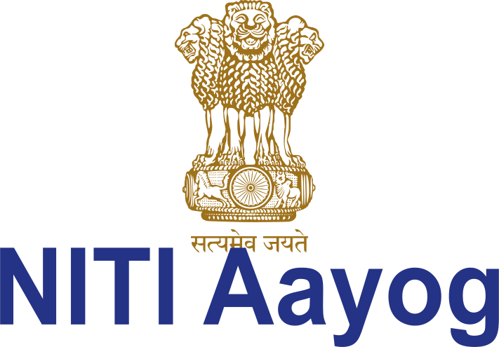
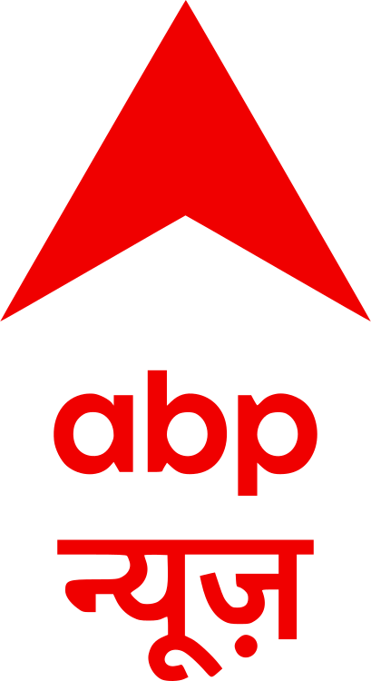
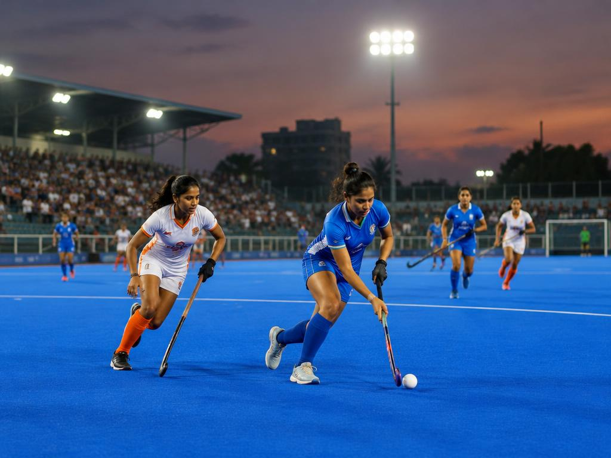

Policy
NITI Aayog communications
Integrated communications, policy-focused messaging and leadership publications for India's apex public policy think tank.
Portfolio · Edition 2026
I'm a former journalist who now shapes communications for government, policy and public institutions — turning complex information into clear, credible narratives through press releases, leadership articles, campaigns and digital storytelling.
Trusted by & worked with


01 About
My career began in newsrooms — reporting and editing at The Times of India Group, ABP and India TV — where I learnt to find the story, verify it, and tell it on deadline. Since 2023 I've brought that discipline to the public sector: sports promotion for the Government of Odisha, impact storytelling for the Chief Minister's Office in Goa, policy communications for NITI Aayog, and now communications at the Andhra Pradesh MedTech Zone.
I work across the full communications mix — press releases and media relations, leadership articles, social media, video scripts and campaign narratives — always with one goal: make complex work understandable, credible and worth sharing.
Core expertise
02 Experience
Communications
Strategic and institutional communications for Andhra Pradesh MedTech Zone, Visakhapatnam — a dedicated medical technology manufacturing park.
Senior Manager, Communications
Integrated communications, policy-focused messaging, campaigns, editorial content and leadership articles.
Government Communications
Impact stories, official social media content, video scripts and campaign narratives.
PR & Communications
Athlete features, newsletters, press releases, event reporting and media management for major national and international sporting events.
Sub-editor / Correspondent
Digital editorial and feature writing across education, lifestyle and sports.
03 Selected work
Policy
Integrated communications, policy-focused messaging and leadership publications for India's apex public policy think tank.

Sports
Promotion of 20+ grassroots hockey centres across the state — athlete features, newsletters and community storytelling.
03
Events
Media management and operations for the Indian Super League, FIFA World Cup 2026 Qualifier, FIH Pro League 2023–24, Kalinga Super Cup, National Federation Senior Athletics and the Odisha National Swimming Championship.
04
Government
Government impact stories, official social media and campaign narratives that brought public schemes closer to citizens.
05
Editorial
Six years of digital editorial and feature writing across education, lifestyle and sports.
04 Newsroom
A selection of official releases I've written and distributed — from policy announcements to international sporting events.
No releases match your search.
05 Services
06 Contact
Phone
+91 63033 47039Subhead